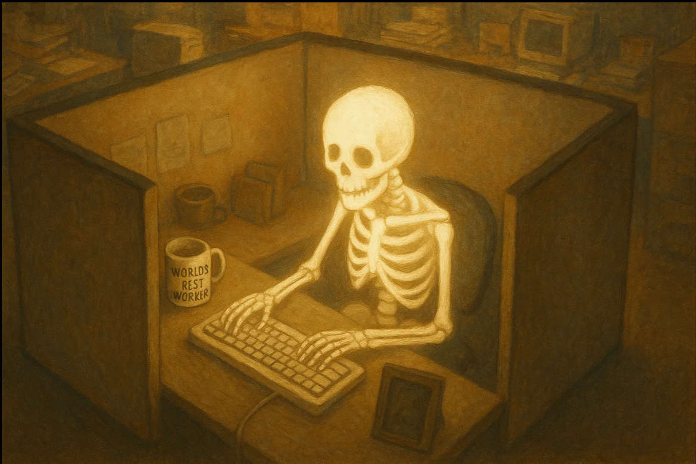

"Welcome to my side of the site where I give frequent updates on my life, and for career."
"So I was able to secure a job with Intergity Staffing Solutions to work as a data entry clerk for JP Morgan Chase Bank. I will work in a secure area, and be destined to type."
"I have been using typeracer.com to help, and relaxing with singleplayer games recently since news and since haven't started it yet. I'm just going to practice and relax till first day."
"Overall, just happy, and the pay is same as UPS, but I get a full time schedule and get to type away."
"Thank you for reading my first post!" || Loki ||
"We created a club on Lichess.com, and made it for the Louisville area, and hope to achieve great things with this club. It mainly will be online for now, and then it will introduce real events. I hope to meet great people, and help start the chess craze here again. If around the state, or area, send a request!
"I also, got my fingers scanned for the new job, and the office was nice, and felt good to finally work for a good place, and know that this will be fun. They were impressed with my determination, and I'm going to continue showing it and get a full time position with their company."
"Thank you for reading my second post!" || Loki ||
"Today was therapy day, and it went well, I was able to talk about how my goals are being accomplished, but not much is being celebrated. With such a turn of events in my life with the fact of going up in projections and then a dip, then going to a higher level then even the start and inital climb has been something to me. I don't feel that I give myself what I deserve. And this isn't just a game, or car, or food. This is that mental juice that keeps the soul alive you know? I feel that this has helped a lot this session, and due to condition I am going to apply for a medical card for cannabis."
"Other news, I was able to get Assassin’s Creed Origins for 7 $ on a Steam Sale, not some shady key store. I have enjoyed it, and really enjoy the progression factor they created. Had some few bugs that just make me laugh, and I get to remember, not recording, no live stream, just pure life you know."
Lastly, I have a chess match on Thursday with a friend, he's coming over to my area and we are going to play on my board and my timer and enjoy the night with some hemp. This has created a good bond between us due to him being from Columbia this has caused speech to be not our core technique. But with this we will talk, philosophy, society, and much more. I hope to teach him, and his name is Samuel. Hey, why not also invite him to the chess club! Another Kentuckian!
"Thank you for reading my third post!" || Loki ||
